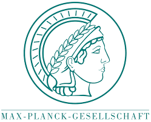

Research Experience
Research Assistant: Max-Planck-Institute, Berlin
Currently working at the Max-Planck-Institut for Human Developement in the Center for Humans and Machines. We are trying to explore human machine interactions in regards of human decision making.
Research Assistant: Langer Lab, Harvard University
Worked as a Research Assistant in Dr. Langer's Lab for Mindfulness over the summer to explore mindful ways to increase heart rate variability and mindful ways to improve interpersonal relations. I am currently writing my Bachelor thesis in cooperation with Harvard, the MIT Media Lab and Freie Universität about dissolving boundaries between people with different political affiliations.
- The Glass Heart Illusion
More can be found under:
 Research Assistant: Center for Brain and Cognition, University of California, San Diego
Research Assistant: Center for Brain and Cognition, University of California, San Diego
During my year abroad in California, I worked as a Research Assistant at the Center for Brain and Cognition directed by V.S. Ramachandran, MD., PhD.
Over these 9 months I have gained invaluable practical experience, by planning my own research under Dr. Ramachandran’s supervision.
Independent Study: Freie Universität, Berlin
Participated in a project about the impact of Phonology and Semantics on Word Beauty as part of a seminar.